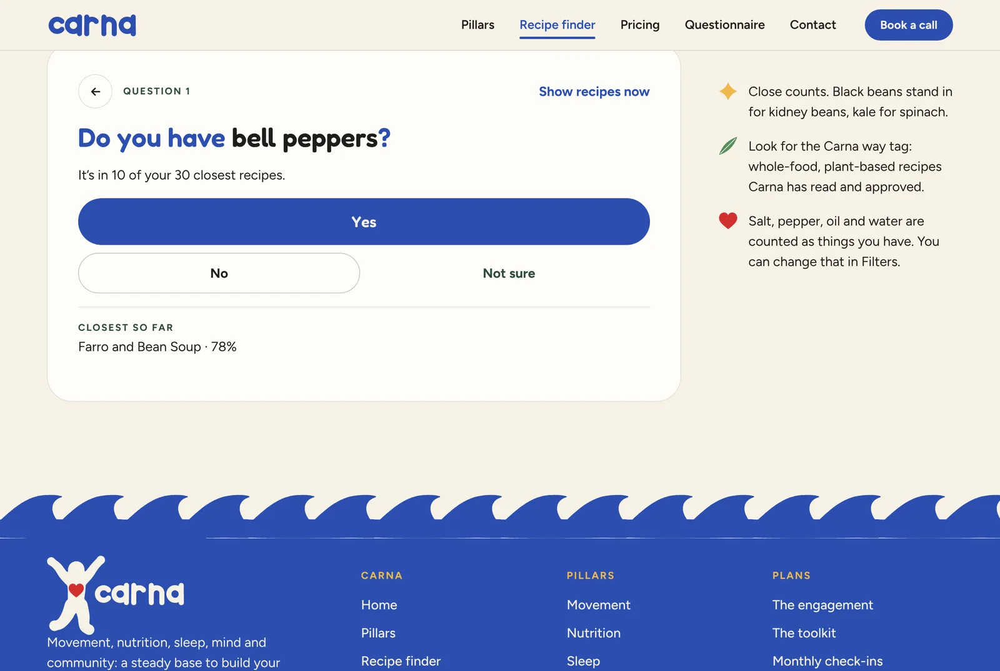
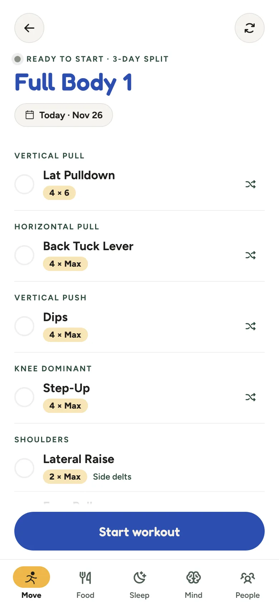
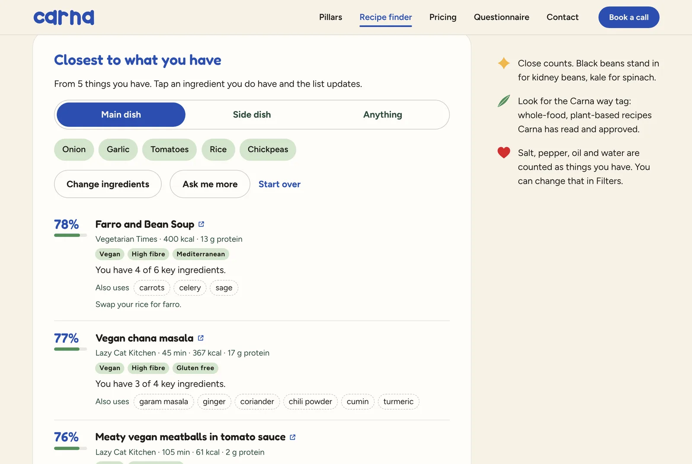
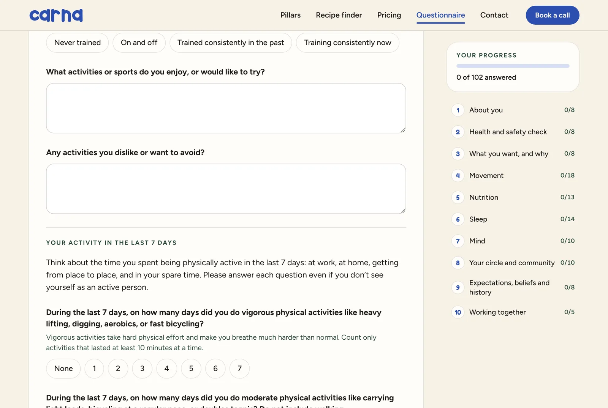
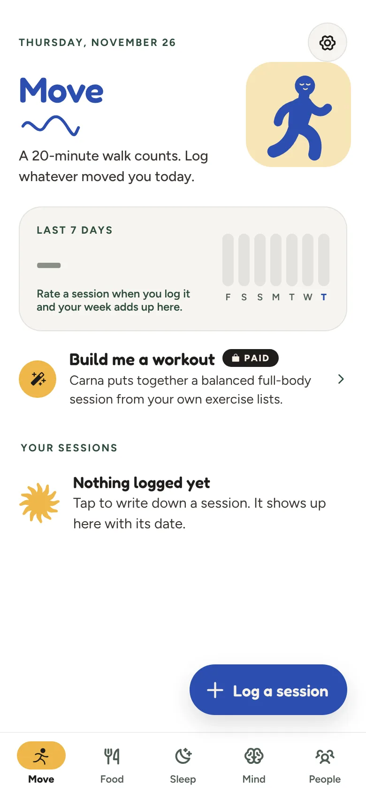
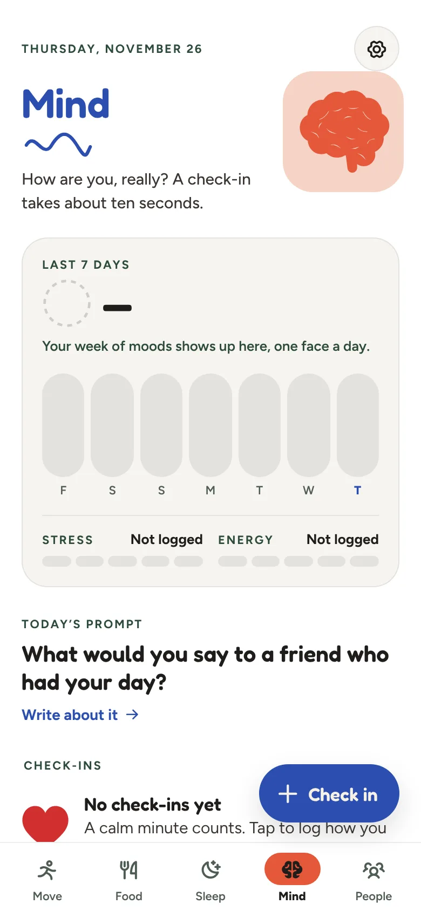

Carna is a wellness project built around five pillars: movement, nutrition, sleep, mind and community. I researched each area, turned the evidence into rules, and built the tools that apply them: a workout generator, a recipe finder backed by its own recipe database, an intake questionnaire and a daily tracking app.
| Category | Wellness & Research |
|---|---|
| Status | Active development |
| Role | Solo: research, product design, build |
| Year | 2026 |
| Capabilities |

The Problem
People who want to eat and move better are not short of information. They are short of a way to apply it. Nutrition advice conflicts, exercise programmes assume a gym and a coach, and recipe sites are organised for browsing, not for "what can I make tonight that fits how I want to eat?"
Generic apps count calories or log workouts but leave the decisions to the user. The result is familiar: good intentions, a lot of reading, and habits that don't stick because each day starts from a blank page.
Understanding the ProblemResearch & discovery
I started with the questions a good coach answers for a client, then looked for evidence or established standards behind each one.
- Food: nutrient values come from USDA reference data. I built an ingredient taxonomy of 413 entries, each linked to a USDA record, so every recipe's nutrition can be calculated rather than trusted from the source site.
- Eating pattern: a whole-food, plant-based rubric with seven principles (food quality, fibre, glycaemic impact, fats, calorie density and more), each with explicit thresholds such as at least 3 g of fibre per 100 kcal.
- Activity: the intake questionnaire uses the IPAQ short form, a validated physical-activity measure, scored with its published rules.
- Training: workouts are balanced across six movement patterns, with a limit on exercises that load the spine heavily.
One insight shaped the recipe work: comparing recipes per serving is misleading, because servings vary. Comparing per 100 kcal is fair. The main assumption is that the scoring heuristics, such as satiety and gut friendliness, are reasonable estimates. They are labelled as heuristics, not medical advice.
Counts from the project's database snapshot, November 2026. 107,286 ingredient lines were parsed and matched along the way.
The Approach
Rather than one large app, Carna is a few small tools that share the same rules. Each answers one question: what should I train today, what can I cook with what I have, and where am I starting from.
The research lives in data and rules, not in articles. That means a recommendation can always be explained: this recipe ranked first because you have four of its six key ingredients; this exercise was skipped because you did it last time.
- EvidenceUSDA nutrient data, IPAQ, training principles, a written rubric
- Data & rulesRecipe database, ingredient taxonomy, movement groups, scoring
- Your inputsIngredients at hand, equipment, split, diet and allergens
- RecommendationA workout or a ranked recipe, with the reason shown
What It Does
Four features, each saving a decision someone would otherwise make from scratch.
Workout generator
Builds a balanced full-body session from your own exercise lists: one exercise per main movement pattern, plus accessories. Any exercise can be swapped, and the rules still hold.
You get variety without planning, and never two heavy spinal-load lifts on back-to-back days.

Recipe finder
Name a few things in your kitchen. It asks about a handful more, then ranks recipes by how much you can already cover, accepting close substitutes such as black beans for kidney beans.
"What can I cook?" becomes a two-minute answer instead of twenty minutes of browsing.

Research-backed labels
Every recipe carries calculated calories, protein, fibre, diet and allergen labels, and filters for eating styles. Recipes reviewed against the plant-based rubric get their own tag.
People can filter by what matters to them and trust where the numbers came from.
Personal starting point
A ten-section intake questionnaire covers goals, health checks and each pillar, including the IPAQ activity questions. Answers go to a private spreadsheet and are scored automatically.
Recommendations start from the person's real situation, not a generic template.

How It Works
A recipe data pipeline
A command-line tool crawls approved recipe sites politely (robots.txt obeyed, a pause between requests), extracts structured recipes, parses each ingredient line, matches it to the taxonomy and converts it to grams. Nutrition is then computed per serving and per 100 kcal, and duplicates are removed. Only facts are exported to the public tool, never the sites' method text.
Rules as a search problem
The workout generator is a small randomised search. It tries to satisfy every rule; if no workout can, it relaxes the least important rule first instead of failing.
Asking the right question
The recipe finder looks at the leading recipes and asks about the ingredient that appears in many of them but is still unknown, so each answer reshuffles the list as much as possible.
Designing the Experience
Most decisions were about removing things.
Questions instead of a form
- Decision
- Ask about one ingredient at a time.
- Rationale
- Nobody can list their whole kitchen from memory.
- Benefit
- A useful answer after a few taps.
Read the title first
- Decision
- Classify dishes by title before the site's own category.
- Rationale
- Sites file sauces and dips under main dishes.
- Benefit
- "Main dish" results are actually meals.
One card per screen
- Decision
- Each app tab has a single summary card; entries are plain rows.
- Rationale
- Early versions felt crowded.
- Benefit
- The week's picture is readable at a glance.
A friend, not a coach
- Decision
- Warm, short copy with no guilt.
- Rationale
- Shame makes people stop logging.
- Benefit
- "A 20-minute walk counts" keeps people coming back.



What I Learned
| Built | The recipe pipeline and database, the recipe finder, the workout generator, the intake questionnaire with automatic scoring, and the daily tracking app. |
|---|---|
| Tested | Automated tests cover the pipeline and matching logic. I use the tracking app and generator daily. |
| Assumed | That the scoring heuristics are sensible proxies, and that question-led search is easier than filters for most people. |
| To validate | Whether other people find the recommendations useful and keep using the tools. |
| Next | next development priority |
The biggest lesson: the value was in the data work. Cleaning ingredient lines and checking labels took longer than any screen, and it is what makes the recommendations believable.
Try it
The app and the website's recipe finder will be linked here once the domains are set up.